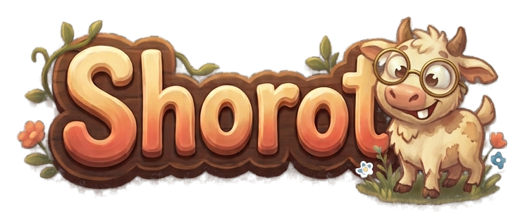

Party games for
the same room.
the same room.
Everyone joins
from their phone
from their phone
K7QZ

Imposter
One of you doesn't know the word.


Codenames
Two teams. One-word clues.

10 Seconds
Stop the clock at exactly 10.000.

Menifot
Split your hand across three boards.

Warfront
Real-time strategy, team vs team.

Bluff
Real cards dealt to every phone.

All-In or Fold
Shove everything, or walk away.

9 games.
One room.
One room.
imposter.shorots.com